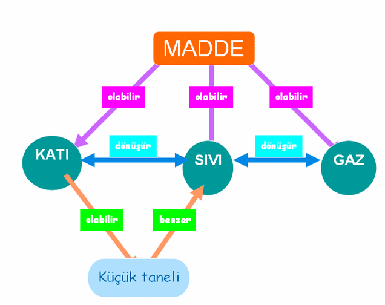

Gezegenimizi Tanıyalım by Cihat TAŞTAN - Prezi
Gezegenimizi Tanıyalım by Cihat TAŞTAN - Prezi
GEZEGENİMİZİ TANIYALIM DÜNYA'MIZIN KATMANLARI DÜNYA'MIZIN ŞEKLİ Dünya'nın Şekli Eski çağlarda insanlar Dünya'nın şekli
ile ilgili değişik tahminlerde bulunmuşlardır.
Click to edit text Mayalar Milattan önce 300'lü yıllarda yaşayan Mayalara göre Dünya; gölde yüzen dev bir timsahtan

Çevremizde insanlar, hayvanlar, dağlar, ağaçlar, taşıtlar, eveler, taş, toprak gibi milyonlarca sayıda canlı yada cansız varlık görürüz.
Canlı yada cansız olsun tüm bu varlıklar birer maddedir.
İşinde bulunduğumuz evremde hacmi ve kütlesi bulunan her varlık bir maddedir . Maddeleri ve maddelerden yapılmış cisimlerin özelliklerinin duyu organlarımızla algılıya biliriz.
Çileğin tadını yiyerek anlayabiliriz.
Kolonyayı kokusundan anlaya biliriz.
Mermerin sertliğini dokunarak anlaya biliriz.
Duyu organlarımızla aldığımız maddeleri saydamlık-opaklık-matlık, sertlik- yumuşaklık, esneklik- berklik, salamlık- kırılganlık gibi özellikleriyle niteleriz.
SAYDAMLIK OPAKLIK
Işığı geçiren maddelere saydam, ışığı geçirmeyen maddelere opak maddeler denir. Cam, su, bazı plastik maddeler, hava saydam maddelerdendir. Tahta, demir, kitap, duvar, çelik tencere gibi maddeler ise opak tır.Bazı badeler ise ışığı tam olarak geçirmezler.
Bu tür maddelere yarı saydam maddeler denir.
Buzlucam, defter yaprağı, şeffaf poşetler, ışıklandırmada kullanılan kapaklar yarı saydam maddelere birer örnektir.
PARLAKLIK-MATLIK
Altın, gümüş, çelik çaydanlık, mermer, cilalı mobilya gibi cisimler parlak; halı yazı tahtası, silgi, kumaş gibi cisimler mat tır.
SERTLİK-YUMUŞAKLIK
Çevremizde gördüğümüz ve kullandığımız madde yada cisimlerin bazıları sert, bazıları yumuşaktır.
Taş, demir, tahta gibi cisimler sert, hamut, sünger, pamuk, lastik gibi cisimler yumuşaktır.
ESNEKLİK-BERKLİK
Lastik gibi maddelere kuvvet uygulayarak şekilden şekle sokabiliriz. Ancak esnek maddeler kuvvetin etkisi kalktığında eski şekillerine döner. Bu tür maddelere esnek maddeler denir.
Sünger, paket lastiği gibi maddeler esnektir.
Esnemeyen maddelere berk maddeler denir.
Kurşun kalem, mermer vazo, cam sürahi gibi berk maddeler esnetildiği zaman kırılırlar.